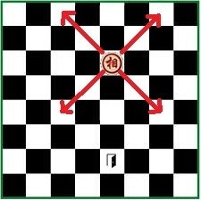

Có một quân tượng trong cờ tướng đi lạc vào một bàn cờ vua. Bàn cờ vua có kích thước là 8 x 8, các dòng được đánh số từ 1 đến 8 theo thứ tự từ trên xuống dưới, các cột được đánh số từ 1 đến 8 theo thứ tự từ trái qua phải. Quân tượng đi lạc đang nằm ở ô (y, x), dòng y cột x. Để có thể quay trở lại bàn cờ tướng, quân tượng phải tìm cách di chuyển đến một cổng thoát tại ô (ty, tx) trên bàn cờ vua. Bạn hãy tính xem quân tượng phải di chuyển ít nhất bao nhiêu nước đi để đến được cổng thoát này.

Ghi chú: Quân tượng cờ tướng di chuyển theo đường chéo 2 ô một, từ ô (y, x) có thể đi đến một trong bốn ô (y-2, x-2), (y-2, x+2), (y+2, x-2), (y+2, x+2).
Dữ liệu nhập:
- Là bốn số nguyên y, x, ty, tx mỗi số cách nhau một khoảng trắng (1 ≤ y, x, ty, tx ≤ 8)
Dữ liệu xuất:
- Nếu quân tượng không thể di chuyển đến cổng thoát, mãi mãi ở lại bàn cờ vua, in ra -1.
- Nếu quân tượng có thể di chuyển đến cổng thoát, in ra số bước di chuyển ít nhất.